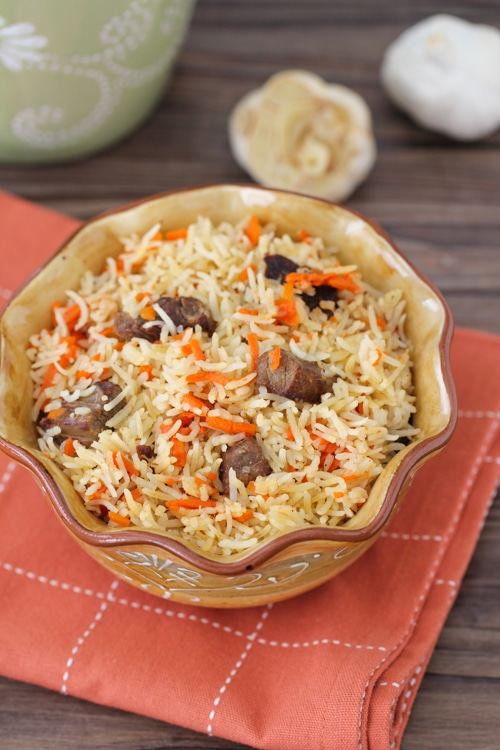

This hearty mix of rice, spices, carrots and meat has featured in Russian kitchens for generations. These days, the dish is generally identified as Uzbek, but that was not the case until official Soviet mythmakers made it so in the 1950s. After that, plov became the one Central Asian dish widely known in Russia; over the past two decades, it's stayed put as a much broader array of the region's cuisine has turned up, plied by everyone from kiosk food vendors to Russia's most illustrious restaurateur.
Russian or Ukrainian Plov is a one-pot rice and meat dish made from rice,meat,carrots,onions, and spices. The spices are what make this dish outstanding!
